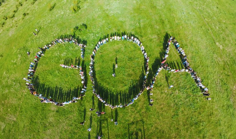

"GOAL ORIENTED ACADEMY" is a coding academy made for chads
Every child should start learning at "GOAL ORIENTED ACADEMY"
the founder of goa is "NIKA KESHELAVA"
goa is the best coding academy in the whole world

"introudoucing our leaders"
davit"s old leader: my old leader was "TAZO GOGISHVILI" he was a very smart guy but
he could not continue being my leader
davit"s new leader: my new leader is "GURAM PAPUNASHVILI" he is a very friendly guy and also
he is very smart
marta's new leader:My leader's name is Guram. He is a very good leader and always helps me if I have a
question about an assignment.
Guram is a very cool leader
marta's old leader: My leader was Barbara Tinikashvili. She was very cute and friendly.
I will never forget her because she made me take my first step into GOA.
data's leader:my leader is "Sandro Jalaghonia", he is always there for me
when I need help he texst's my if i need any help he is a fery friendly and very smart
mate's old leader:my old leader was "dato berkacashvili"
he was very smart and he was very chill
mate's new leader:my new leader is "gorona"he is very smart and he is very funny